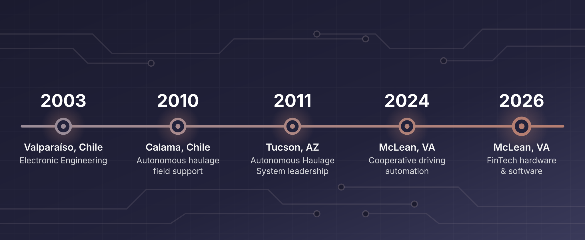

Freddy Goldberger
Highly accomplished Engineering Manager with 11+ years of leadership in autonomous vehicle development and support, now leading software and hardware engineering teams at Capital One. Robust expertise in software and hardware development, data-center infrastructure, telecommunications, embedded systems, GNSS, automation, and instrumentation. Proven ability to manage cross-functional engineering teams, drive project timelines, and deliver exceptional results. Adept at coaching and mentoring for team growth, with a strong command of Agile and Lean methodologies.
Executive Summary
- Program Turnaround: Took over a stalled kiosk hardware launch at Capital One, secured funding through vendor renegotiation, and launched the second-generation Cashier's Check Kiosk to 13 new Café locations with 90% fewer manufacturing defects.
- Engineering Leadership: Grew the Autonomous Haulage System Global Support team from 3 to 20 engineers, fostering a culture of mentorship and high accountability.
- Infrastructure Projects: Led two renovations of the support virtualization cluster, each with a budget of nearly $500K for hardware and labor.
- Operational Excellence: Improved Service Level Agreement (SLA) compliance by 40% through process optimization and ISO9001-aligned documentation.
- Agile Transformation: Led the transition from Waterfall to Agile/Scrum, and more recently drove AI-assisted, spec-driven development practices across two teams.
Detailed Resume
Employment History
Sr. Manager, Full-Stack Engineering
Capital One, McLean VA | February 2026 — Present
- Lead two engineering teams (11 people), one software and one hardware engineering, that build and support In-Person Transaction devices for Capital One Cafés, including the Cashier's Check Kiosk (CCK).
- Took ownership of a stalled hardware product launch; repaired a strained vendor relationship, renegotiated pricing to secure funding, and launched CCK v2 to 13 new Café locations.
- Led hardware/software readiness reviews and set acceptance criteria with the manufacturing partner, cutting manufacturing defects 90% vs. the prior generation.
- Led modernization of the regression test suite and integrated automated tests into the CI pipeline, cutting manual testing time ~25%.
- Drove adoption of AI-assisted and spec-driven development practices across both teams, which became the model other teams adopted.
- Renegotiated a facilities vendor contract, cutting annual cost by roughly $25K at the same service level.
- Budget preparation and tracking (~$500K). Coaching and mentoring of team leads and junior engineers.
Systems Engineering Manager – Autonomous Vehicles
Leidos, McLean VA | August 2024 — February 2026
- Management of the Systems Engineering team at the Saxton Transportation Operations Laboratory.
- Key contributor to the architecture documentation of cooperative driving automation.
- Project management of the creation and launch of a scaled vehicle platform for research and development of cooperative and autonomous driving.
- Contribute to program management, enhancing processes and tools for project managers to optimize project delivery.
- Drive the adoption of industry-standard software development practices across the engineering team, improving code quality and efficiency.
Software Development Manager
Komatsu, Tucson AZ | August 2022 — August 2024
- Management of the autonomous system Product Development and Quality Assurance teams.
- Provide guidance to the team and ensure adherence to development standards.
- Influence the decision making of strategic technical decisions with executive leadership.
- Fostered a healthy, inclusive team atmosphere valuing respect, accountability, and integrity.
- Hire, retain and grow talent on the team. Offer coaching and development opportunities.
- Validate key architecture decisions and solutions.
- Preparation and budget tracking.
Lead Supervisor of Global Support
Komatsu, Tucson AZ | December 2020 — July 2022
- Managed the Global Support team for autonomous systems, providing effective technical support across time zones and languages, resulting in improved customer satisfaction and reduced downtime.
- Customer support supervision for the regions of Australia, North America, and Latin America.
- Streamlined product deployment and support processes, enhancing customer experience.
- Enhanced service delivery by managing KPIs/SLAs, implementing improvement strategies, boosting customer satisfaction and efficiency.
- Coaching and mentoring of engineers and engineering supervisors.
- Responsible for hiring and onboarding new personnel.
- Product documentation quality control.
Engineering Supervisor of Global Support
Modular Mining (Komatsu Company), Tucson AZ | January 2015 — December 2020
- Engineering Supervision for the Autonomous Haulage System Global Support team.
- Lead a team of engineers to achieve higher levels of customer satisfaction by implementing processes to speed up the resolution of issues.
- Lead the preparation of support processes that meet ISO9001 standards.
- Project management of product installation at customer sites worldwide.
- Supervise the development of support tools to automate troubleshooting of the software.
- Lead efforts for the standardization of the product documentation and training material.
- Project management for the commissioning of a data-center infrastructure for support.
- Supervise the development of a capacity model to forecast staffing needs.
Product Engineer
Modular Mining (Komatsu Company), Tucson AZ | July 2011 — December 2014
- Diagnosed system failures, reported bugs, and implemented workarounds to improve reliability.
- Led training, managed installations/upgrades, and tested FrontRunner systems.
- Documentation for processes and user manuals.
- Developed automation applications for maintenance and support tasks.
Support Engineer
Modular Mining (Komatsu Company), Calama, Chile | April 2010 — July 2011
- Provided autonomous system support, troubleshooting, and escalated defects to the global support.
- Developed Java applications for better visualization of relevant system health metrics.
- Maintenance of the datacenter, workstation, and network infrastructure.
Education
- Master of Engineering Management Candidate, Johns Hopkins University (Expected May 2027)
- Focus: Artificial Intelligence
- Electronic Engineering (Ingeniero Civil Electrónico), Universidad Técnica Federico Santa María, Chile (2003 — 2009)
- 6-year professional engineering degree
- Specialization: Automation and Instrumentation
- Secondary specialization: Computer Science
Courses
- Leadership and Management: Agile Development Practices, Inspiring and Motivating Individuals, Leadership for Engineers, Business Leadership Competencies Program.
- Technical: Interconnecting Cisco Network Devices I and II, Machine Learning.
Internships
Hardware Design Engineer
Ingeniería Wiseconn, Viña del Mar, Chile | January 2009 — March 2009
- Wireless irrigation module design for farms, optimizing water distribution using telemetry.
- Designed and tested wireless IoT modules, including schematic design and PCB layout using Altium Designer.
Technical Skills
- Programming languages: Java, C/C++, Python, Verilog (VHDL), Bash Shell, MATLAB, SQL.
- Operating Systems (Administrator Level): Arch Linux, Debian, Red Hat, and MS Windows Server.
- Electronics Design: Altium Designer, Altium Circuit Studio.
- Embedded Systems Development: IAR Embedded Workbench, AVR Studio 7, Microchip MPLAB.
- Virtualization Hypervisor: VMware vSphere, Proxmox.
- Products used: Zendesk Admin, Confluence, Azure DevOps (TFS), Office 365 Suite.
- Positioning Systems: High precision positioning systems (RTK and PPP).
- Communications protocols and systems: TCP/IP, I2C, SPI, Serial, Wi-Fi, LTE.